Before you start, open this companion Colab notebook that walks through the entire metadata-powered query routing pipeline, from grouping pages to chunking, embedding, and intelligent retrieval.
pharma-blob-sample.pdf to your computer. Use it to test document splitting, classification, and routing.GEMINI_API_KEY, as in earlier projects.This notebook uses the same JSON metadata from Step 1 and builds on your existing logic, perfect for following along. It labels the pages again by itself, so you don't need your Step 1 output.
Run the cells from the top, in order. Every code block on these slides is already in your notebook, so there's nothing to paste.
Press Run on the cell that starts with # STEP 1: Install Required Packages:
# ============================================# STEP 1: Install Required Packages# ============================================## WHAT WE'RE DOING:# Installing LlamaIndex (RAG framework), HuggingFace embeddings,# pypdf (PDF text extraction), and Google Generative AI (Gemini LLM).## WHY THIS MATTERS:# This end-to-end pipeline combines all the tools from previous notebooks:# PDF reading, LLM classification, embedding, and filtered retrieval.## WHAT YOU'LL SEE:# Package installation output (may take 1-2 minutes).# ============================================!pip install -q llama-index==0.14.26 llama-index-readers-file==0.8.0 llama-index-embeddings-huggingface==0.9.0!pip install -q transformers==5.22.1 sentence-transformers==5.7.0 pypdf==6.21.4!pip install -q google-genai==2.12.1What this code does:
pypdf to read the PDF, and google-genai to talk to Gemini.== fix each library's version, so a Colab update can't break the notebook. This copy added them.What you'll see in Colab:
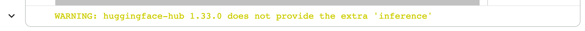
(opens the picture full size in a new tab)The cell takes about 40 seconds. This yellow warning is safe to ignore.
Press Run on the cell that starts with # Upload the sample PDF, click Choose Files and pick pharma-blob-sample.pdf, the file you downloaded on slide 1:
# Upload the sample PDF# Click "Choose Files" below and pick pharma-blob-sample.pdf from your computer.# Colab saves it in /content, where the next cell looks for it.from google.colab import filesuploaded = files.upload()What this code does:
files.upload() opens a file picker in your notebook./content, the folder where the next cells look for it. This copy added the cell.What you'll see in Colab:
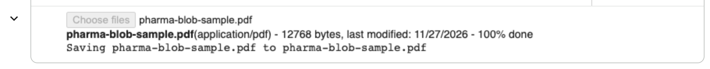
(opens the picture full size in a new tab)Saving pharma-blob-sample.pdf to pharma-blob-sample.pdf means it worked.
Your first job is to extract raw text from each page of a multi-document PDF and label each page with:
is_new_doc)doc_type)You'll use a rule-based function (or optionally an LLM) to do this. Your notebook uses an LLM, Gemini, a few cells later. This cell does the first half: it pulls out the text.
Press Run on the cell that starts with # STEP 2: Load the Pharmaceutical Blob PDF:
# ============================================# STEP 2: Load the Pharmaceutical Blob PDF# ============================================## WHAT WE'RE DOING:# Reading the 10-page pharmaceutical blob PDF and extracting# text from each page using pypdf.## WHY THIS MATTERS:# This blob contains 7 different document types (Cover Letter,# Certificates of Quality, Packaging Spec, BSE/TSE Declaration,# Material Description, Supplier Qualification, Chain of Custody).# We need to split and classify them automatically.## WHAT YOU'LL SEE:# A list of dictionaries, one per page, each with page_num and text.# ============================================from pypdf import PdfReaderreader = PdfReader("/content/pharma-blob-sample.pdf")pages = [page.extract_text() for page in reader.pages]doc_pages = [{"page_num": i, "text": p} for i, p in enumerate(pages)]doc_pagesWhat this code does:
PdfReader opens the PDF you uploaded, and extract_text() pulls the words out of each page.doc_pages pairs each page number with its text. The numbers count from 0, so the first page is page 0.What you'll see in Colab:
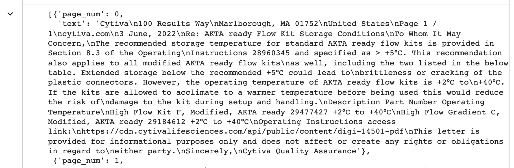
(opens the picture full size in a new tab)page_num and that page's text. The \n marks are line breaks.This slide shows the first part of the next cell, and the next slide the rest. Read both, then run it. This cell sets up the helper that every Gemini request in the notebook goes through.
# ============================================# STEP 3: Set Up Gemini LLM# ============================================## WHAT WE'RE DOING:# Creating a helper function that sends prompts to Google's# Gemini 3.5 Flash-Lite model. We'll use this for classification# and boundary detection.## WHY THIS MATTERS:# The LLM is the brain of our pipeline — it decides what type# each page is and whether consecutive pages belong together.## WHAT YOU'LL SEE:# No output (just defines the function).# ============================================from google import genaifrom google.colab import userdataimport timeMODEL = "gemini-3.5-flash-lite"client = genai.Client(api_key=userdata.get('GEMINI_API_KEY'))Press Run on the cell that starts with # STEP 3: Set Up Gemini LLM. This is the rest of it:
def gemini_model(prompt, retries=3): for attempt in range(retries): try: response = client.models.generate_content(model=MODEL, contents=prompt) return response.text except Exception as e: busy = any(s in str(e).lower() for s in ["429", "503", "overloaded", "resource_exhausted", "unavailable"]) if busy and attempt < retries - 1: wait = 30 * (attempt + 1) print(f"Gemini is busy, retrying in {wait}s...") time.sleep(wait) else: raiseWhat this code does:
MODEL names the Gemini model, and client reads your key from Colab Secrets.gemini_model(prompt) sends a prompt to Gemini and returns its reply as text.No output: this cell only gets things ready for the next ones. If Colab asks Grant access? for GEMINI_API_KEY, click Grant access.
This slide shows the first part of the next cell, and the next slide the rest. Read both, then run it. This cell asks Gemini whether a page continues the page before it.
# ============================================# STEP 4: Define Document Boundary Detection# ============================================## WHAT WE'RE DOING:# Creating a function that asks the LLM whether two consecutive# pages belong to the same pharmaceutical document.## WHY THIS MATTERS:# Some documents span multiple pages (e.g., a 2-page Packaging# Specification or 2-page Supplier Qualification Record).# We need to detect these boundaries accurately.## WHAT YOU'LL SEE:# No output (just defines the function).# ============================================def is_same_document(prev_text, curr_text, doc_type=None): prompt = f""" You are checking whether two consecutive pages from a pharmaceutical document package belong to the SAME individual document. A NEW document starts when the page has: - A different document title or heading (e.g., "Certificate of Quality"Press Run on the cell that starts with # STEP 4: Define Document Boundary Detection. This is the rest of it:
vs "Packaging Specification" vs "Material Description Sheet") - A completely different topic or subject matter - Its own header with a new document number or reference Pages belong to the SAME document when: - The second page says "continued" or "page 2 of 2" - The content directly continues the previous page's discussion - They share the same document number or title Previous page type: {doc_type or 'unknown'} Previous Page: {prev_text} Current Page: {curr_text} Do these two pages belong to the SAME document? Answer ONLY 'Yes' or 'No'. """ response = gemini_model(prompt) return response.strip().lower().startswith("yes")What this code does:
is_same_document gets the previous page, the current page and the previous page's type.True when Gemini's answer starts with "yes". The cell prints nothing.This cell holds the label list and the classifier. It's long, so it takes 3 slides. Read them, then run it.
Changed in this copy: the labels are spelled Certificate of Quality, BSE/TSE Declaration and Chain of Custody, the same as the router later, and an answer that matches no label becomes Other.
# ============================================# STEP 5: Define Document Type Classification# ============================================## WHAT WE'RE DOING:# Creating a function that classifies a page into one of# 7 pharmaceutical document types (plus "Other").## WHY THIS MATTERS:# Each document type needs different extraction logic.# A Certificate of Quality has test results and lot numbers,# while a BSE/TSE Declaration has compliance dates.## WHAT YOU'LL SEE:# No output (just defines the function).# ============================================# Valid document type labels used throughout this notebookVALID_DOC_TYPES = [ "Cover Letter", "Certificate of Quality", "Packaging Specification", "BSE/TSE Declaration", "Material Description", "Supplier Qualification", "Chain of Custody", "Other"]The middle of the cell:
def clean_doc_type(response): """Clean up LLM response to extract a valid doc_type label.""" cleaned = response.strip().replace('"', '').replace('`', '').replace('*', '').lower().replace(".", "").strip() cleaned_title = cleaned.title() # Check if the cleaned response contains a valid label for label in VALID_DOC_TYPES: if label.lower() in cleaned.lower(): return label return "Other"def classify_document_type(text): prompt = f""" You are a pharmaceutical document classifier. Based on the page content below, classify it into ONE of these document types: - Cover Letter: A formal letter (often starting with "To Whom It May Concern") discussing product information or storage conditions. - Certificate of Quality: Contains lot numbers, manufacture dates, expiration dates, and test results (autoclave, gamma irradiation). - Packaging Specification: Describes packaging components, materials, part numbers, and configuration change history. - BSE/TSE Declaration: A declaration about animal-origin materialsWhat this code does:
VALID_DOC_TYPES holds the 7 document types, plus Other.clean_doc_type tidies Gemini's reply and returns the matching label, spelled exactly as in the list.Press Run on the cell that starts with # STEP 5: Define Document Type Classification. This is the end of it:
and transmissible spongiform encephalopathy compliance. - Material Description: Lists materials of construction, sterilization compatibility, and physical properties of a product. - Supplier Qualification: Contains supplier audit history, certifications (ISO 9001, ISO 13485), and approved product lists. - Chain of Custody: Lists manufactured assemblies, traceability information, and the manufacturing-to-shipment flow. - Other: Use ONLY if the content does not match any of the above. Page Content: {text} Respond with ONLY the document type name. No explanation. """ response = gemini_model(prompt) return clean_doc_type(response)What this code does:
classify_document_type asks Gemini to pick one type for a page, with a short description of each type.No output: this cell only gets things ready for the next ones.
This slide shows the first part of the next cell, and the next slide the rest. Read both, then run it. This loop builds your metadata, one page at a time.
# ============================================# STEP 6: Run the Classification Pipeline# ============================================## WHAT WE'RE DOING:# Looping through all 10 pages, classifying each one and# detecting document boundaries. This builds our metadata_store.## WHY THIS MATTERS:# This is the core of the blob processing pipeline — it turns# a flat list of pages into structured, labeled metadata.## WHAT YOU'LL SEE:# A list of 10 entries, each with page number, text, doc_type,# and page_in_doc (0 = first page of that document).# Multi-page docs like Packaging Spec (pages 4-5) will show# page_in_doc: 0 then 1.# ============================================metadata_store = []current_doc_type = Nonedoc_counter = 0page_counter = 0Press Run on the cell that starts with # STEP 6: Run the Classification Pipeline. This is the rest of it:
for i, page in enumerate(doc_pages): same = False if i == 0: current_doc_type = classify_document_type(page["text"]) else: prev_text = doc_pages[i - 1]["text"] same = is_same_document(prev_text, page["text"], current_doc_type) if not same: doc_counter += 1 current_doc_type = classify_document_type(page["text"]) page_counter = 0 else: page_counter += 1 metadata_store.append({ "page": i, "text": page["text"], "doc_type": current_doc_type, "page_in_doc": page_counter })metadata_storeWhat this code does:
page_in_doc goes back to 0. A page that continues a document adds 1.doc_type and page_in_doc go into metadata_store.This cell sends about 17 requests to Gemini. If you see Gemini is busy, retrying in 30s..., wait: it carries on by itself.
What you'll see in Colab:
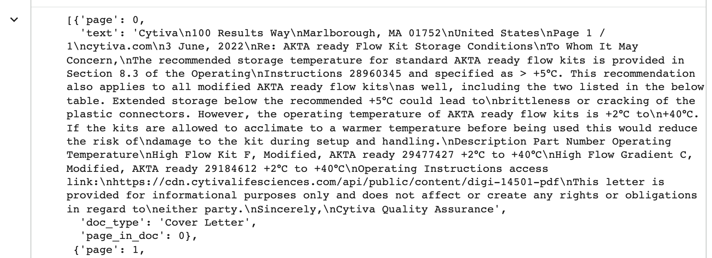
(opens the picture full size in a new tab)The full list is long. These are the labels Gemini gave all 10 pages in our run:
| page | doc_type | page_in_doc |
|---|---|---|
| 0 | Cover Letter | 0 |
| 1 | Certificate of Quality | 0 |
| 2 | Certificate of Quality | 0 |
| 3 | Packaging Specification | 0 |
| 4 | Packaging Specification | 1 |
| 5 | BSE/TSE Declaration | 0 |
| 6 | Material Description | 0 |
| 7 | Supplier Qualification | 0 |
| 8 | Supplier Qualification | 1 |
| 9 | Chain of Custody | 0 |
page_in_doc goes 0, then 1.This slide shows the first part of the next cell, and the next slide the rest. Read both, then run it. Here, you use page_in_doc and doc_type to group consecutive pages into full documents.
# ============================================# STEP 7: Group Pages into Logical Documents# ============================================## WHAT WE'RE DOING:# Combining consecutive pages that belong to the same document# into a single logical document with merged text.## WHY THIS MATTERS:# The Packaging Specification (pages 4-5) and Supplier# Qualification Record (pages 8-9) each span 2 pages.# We need to merge them so retrieval sees the full document.## WHAT YOU'LL SEE:# No printed output, but logical_docs will contain ~8 documents# (10 pages grouped into 8 logical documents).# ============================================Press Run on the cell that starts with # STEP 7: Group Pages into Logical Documents. This is the rest of it:
logical_docs = []current_doc = {"text": "", "doc_type": None, "page_start": 0}for page in metadata_store: if page["page_in_doc"] == 0 and current_doc["text"]: current_doc["page_end"] = page["page"] - 1 logical_docs.append(current_doc) current_doc = {"text": "", "doc_type": None, "page_start": page["page"]} current_doc["text"] += "\n\n" + page["text"] current_doc["doc_type"] = page["doc_type"]# Append last documentcurrent_doc["page_end"] = metadata_store[-1]["page"]logical_docs.append(current_doc)What this code does:
page_in_doc 0 starts a new document, so the document before it is saved with its page_end.No output. Now each item in logical_docs is a reconstructed document: clean, structured, and labeled. In our run, there are 8.
This slide shows the first part of the next cell, and the next slide the rest. Read both, then run it. This cell cuts each document into chunks and gives every chunk its metadata, as in Learn card 3.
# ============================================# STEP 8: Chunk Each Document with Metadata# ============================================## WHAT WE'RE DOING:# Splitting each logical document into 500-word chunks and# attaching metadata (doc_type, page range, source file).## WHY THIS MATTERS:# Chunks are what actually get embedded and stored in the# vector database. The metadata lets us filter retrieval# to only the right document type.## WHAT YOU'LL SEE:# No printed output, but chunked_documents will contain# LlamaIndex Document objects ready for embedding.# ============================================from llama_index.core.schema import Documentdef chunk_text(text, chunk_size=500): words = text.split() return [' '.join(words[i:i+chunk_size]) for i in range(0, len(words), chunk_size)]Press Run on the cell that starts with # STEP 8: Chunk Each Document with Metadata. This is the rest of it:
chunked_documents = []for idx, doc in enumerate(logical_docs): chunks = chunk_text(doc["text"]) for chunk_idx, chunk in enumerate(chunks): chunked_documents.append( Document( text=chunk, metadata={ "doc_type": doc["doc_type"], "chunk_index": chunk_idx, "page_start": doc["page_start"], "page_end": doc["page_end"], "source_file": "pharma-blob-sample.pdf" } ) )What this code does:
chunk_text splits a text into pieces of up to 500 words (chunk_size=500).Document: a piece of text plus its metadata, doc_type, chunk_index, page_start, page_end and source_file.No output. Every chunk now carries context about its parent document, essential for routing. In our run, every document is under 500 words, so there are 8 chunks.
You're now feeding each chunk (along with its metadata) into an embedding model (HuggingFace). Once that's done, you store all these vectors in a vector index: a searchable system that can find chunks that "mean" the same thing as your question.
Press Run on the cell that starts with # STEP 9: Embed Chunks and Build Vector Index:
# ============================================# STEP 9: Embed Chunks and Build Vector Index# ============================================## WHAT WE'RE DOING:# Converting each chunk into a numerical vector (embedding)# using the BGE-small embedding model, then storing them in# an in-memory vector index for fast similarity search.## WHY THIS MATTERS:# This is what makes RAG work — when a user asks a question,# we find the most similar chunks by comparing embeddings.## WHAT YOU'LL SEE:# A progress bar as chunks are embedded (may take 30-60 seconds).# ============================================from llama_index.embeddings.huggingface import HuggingFaceEmbeddingfrom llama_index.core import VectorStoreIndexembed_model = HuggingFaceEmbedding(model_name="BAAI/bge-small-en-v1.5")index = VectorStoreIndex.from_documents(chunked_documents, embed_model=embed_model)What this code does:
BAAI/bge-small-en-v1.5 is BGE, the embedding model you tested in Project 6. A vector is the list of numbers it makes for each chunk.VectorStoreIndex embeds every chunk and stores the numbers together with the chunk's metadata.What you'll see in Colab:
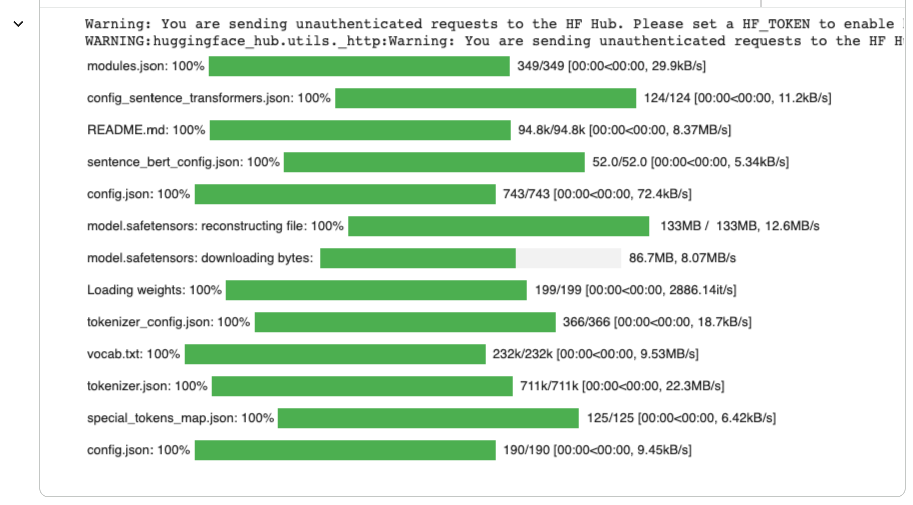
(opens the picture full size in a new tab)HF_TOKEN warnings only mean you aren't signed in to Hugging Face, and you don't need to be.What's happening now?
When a user sends a query, your system should first guess the document type the answer likely belongs to. You can use a lightweight model like Gemini or Mistral to route the query. Your notebook uses Gemini.
This slide shows the first part of the next cell, and the next slide the rest. Read both, then run it.
# ============================================# STEP 10: Define Query Routing Function# ============================================## WHAT WE'RE DOING:# Creating a function that predicts which document type is# most relevant to a user's query. The LLM acts as a router,# directing each query to the right document type.## WHY THIS MATTERS:# Without routing, a query about BSE/TSE compliance might# retrieve text from a Cover Letter. Routing ensures we# search only within the relevant document type.## WHAT YOU'LL SEE:# No output (just defines the function).# ============================================Press Run on the cell that starts with # STEP 10: Define Query Routing Function. This is the rest of it:
def predict_doc_type_for_query(query): prompt = f""" You are an intelligent assistant that routes user queries to the most relevant pharmaceutical document. User query: "{query}" Which document type is most likely to contain the answer? Choose ONLY ONE from: Cover Letter, Certificate of Quality, Packaging Specification, BSE/TSE Declaration,Material Description, Supplier Qualification, Chain of Custody, Other. Respond with ONLY the document type name. No explanation. """ response = gemini_model(prompt) return clean_doc_type(response)What this code does:
Other, and asks Gemini for one.clean_doc_type turns the reply into a label spelled exactly as in VALID_DOC_TYPES, because the filter in the next cell only matches exact spellings.No output: this cell only gets things ready for the next ones.
Then, retrieve only from chunks that match that type.
This slide shows the first part of the next cell, and the next slide the rest. Read both, then run it.
# ============================================# STEP 11: Route a Query and Retrieve Filtered Results# ============================================## WHAT WE'RE DOING:# Testing the full pipeline with a pharmaceutical query.# The LLM predicts the document type, then we retrieve# only chunks from that type using metadata filtering.## WHY THIS MATTERS:# This is the payoff — instead of searching all 10 pages,# we narrow down to just the relevant document type first.## WHAT YOU'LL SEE:# The predicted document type (e.g., "Packaging Specification"),# followed by matching chunks with page ranges.# ============================================from llama_index.core.vector_stores import MetadataFilters, FilterOperator, MetadataFilter# Get doc_type filteruser_query = "Were there any packaging configuration changes?"predicted_doc_type = predict_doc_type_for_query(user_query)print(f"Predicted document type: {predicted_doc_type}")Press Run on the cell that starts with # STEP 11: Route a Query and Retrieve Filtered Results. This is the rest of it:
# Retrieveretriever = index.as_retriever( filters=MetadataFilters( filters=[ MetadataFilter(key="doc_type", value=predicted_doc_type, operator=FilterOperator.EQ) ] ))results = retriever.retrieve(user_query)for res in results: print(f"[{res.metadata['doc_type']} - p{res.metadata['page_start']}–{res.metadata['page_end']}]") print(res.text[:200]) print("-" * 50)What this code does:
MetadataFilter keeps only chunks whose doc_type equals (EQ) the predicted type.index.as_retriever(...) searches only those chunks. The cell doesn't set how many to return, so LlamaIndex returns up to 2, its default.What you'll see in Colab:
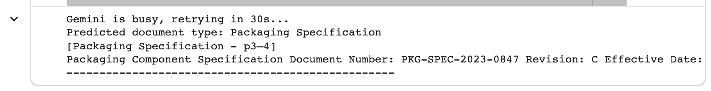
(opens the picture full size in a new tab)Only the Packaging Specification's one chunk came back: pages 3 to 4. The first line means Gemini was busy once.
This slide shows the first part of the next cell, and the next slide the rest. Read both, then run it. Retrieval finds the right text. This cell asks Gemini to answer from it.
# ============================================# STEP 12: Extract the Answer Using the LLM# ============================================## WHAT WE'RE DOING:# Taking the top retrieved chunk and asking Gemini to extract# a specific answer to the user's question.## WHY THIS MATTERS:# Retrieval alone gives us relevant text. This final step# uses the LLM to produce a clear, concise answer — the# "generation" part of Retrieval-Augmented Generation.## WHAT YOU'LL SEE:# A direct answer to the query extracted from the retrieved text.# ============================================Press Run on the cell that starts with # STEP 12: Extract the Answer Using the LLM. This is the rest of it:
if results: # Take the text from the first (most relevant) result retrieved_text = results[0].text # Ask the model for a specific answer prompt = f""" Based on the following text, please answer the user's question. Text: {retrieved_text} User Question: {user_query} Provide a clear, specific answer based only on the text provided. """ answer = gemini_model(prompt) print(f"Query: '{user_query}'") print(f"Answer: {answer}")else: print("Could not find an answer as no relevant documents were retrieved.")What this code does:
results[0].text is the top chunk the filter let through.What you'll see in Colab:
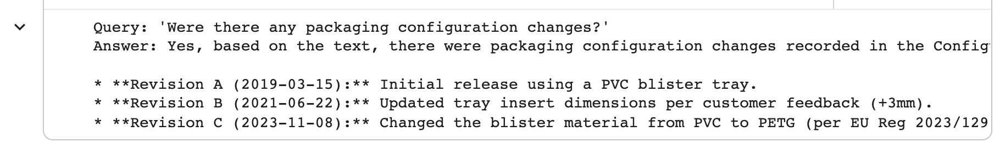
(opens the picture full size in a new tab)This slide shows the first part of the next cell, and the next slide the rest. Read both, then run it. Last, the notebook runs 6 questions through the whole pipeline. This cell is long, so it takes 3 slides.
# ============================================# STEP 13: Test All 6 Pharmaceutical Extraction Queries# ============================================## WHAT WE'RE DOING:# Running all 6 extraction targets through the full pipeline# to verify that routing, retrieval, and answer extraction# work correctly for each document type.## WHY THIS MATTERS:# This is the ultimate test of our end-to-end system. Each# query should route to the correct document type and extract# a meaningful answer from the pharmaceutical blob.## WHAT YOU'LL SEE:# For each query: the predicted document type, the retrieved# page range, and the extracted answer.# ============================================test_queries = [ "What is the material description for this product?", "What are the part numbers listed in this document?", "Were there any packaging configuration changes?", "What are the BSE/TSE compliance dates?", "Are there any documents dated over 5 years ago?", "What supplier information is available?",]The middle of the cell routes each question and searches only the chunks of its type, as in the last cells:
for i, query in enumerate(test_queries, 1): print(f"\n{'='*60}") print(f"QUERY {i}: {query}") print(f"{'='*60}") # Route the query predicted_type = predict_doc_type_for_query(query) print(f"Routed to: {predicted_type}") # Retrieve with metadata filter retriever = index.as_retriever( filters=MetadataFilters( filters=[ MetadataFilter(key="doc_type", value=predicted_type, operator=FilterOperator.EQ) ] ) ) results = retriever.retrieve(query)Press Run on the cell that starts with # STEP 13: Test All 6 Pharmaceutical Extraction Queries. This is the end of it:
if results: print(f"Retrieved {len(results)} chunk(s) from pages {results[0].metadata['page_start']}-{results[0].metadata['page_end']}") # Extract answer prompt = f""" Based on the following text, please answer the user's question. Text: {results[0].text} User Question: {query} Provide a clear, specific answer based only on the text provided. """ answer = gemini_model(prompt) print(f"Answer: {answer.strip()}") else: print("No matching documents found for this query.")What this code does:
No matching documents found for this query. when the filter lets no chunk through.This cell sends about 11 requests to Gemini, so a Gemini is busy wait is normal.
What you'll see in Colab:
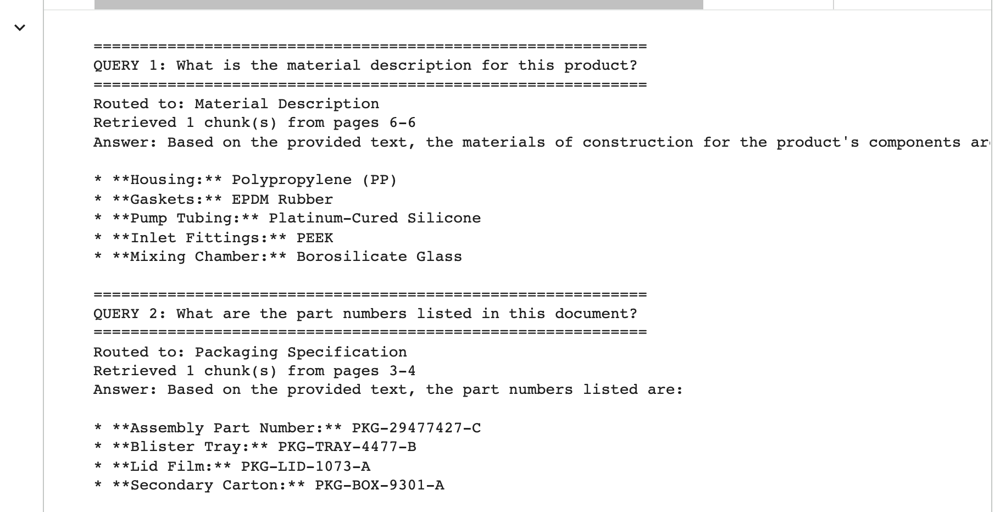
(opens the picture full size in a new tab)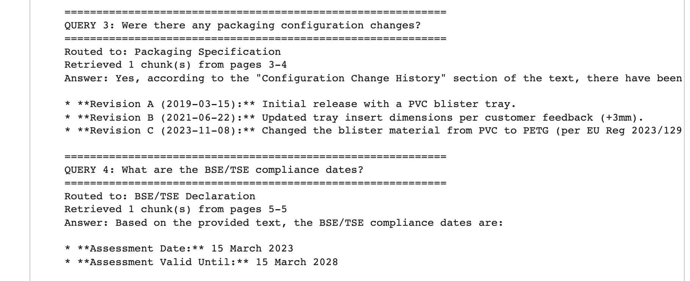
(opens the picture full size in a new tab)Each of the first 4 questions went to one document type, and one chunk came back. Long lines run past the right edge of Colab's output box.
What you'll see in Colab:
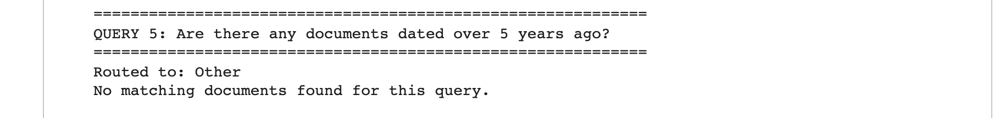
(opens the picture full size in a new tab)Other, because the question is about dates in every document, so no single type fits.Other, so the filter let nothing through, and nothing was searched.Date of Manufacture: 20190712), more than 5 years ago.Routing helps when a question points to one document type. When the answer could be in any document, a filter on one type can't find it. Your code isn't broken: this is what routing does.
What you'll see in Colab:
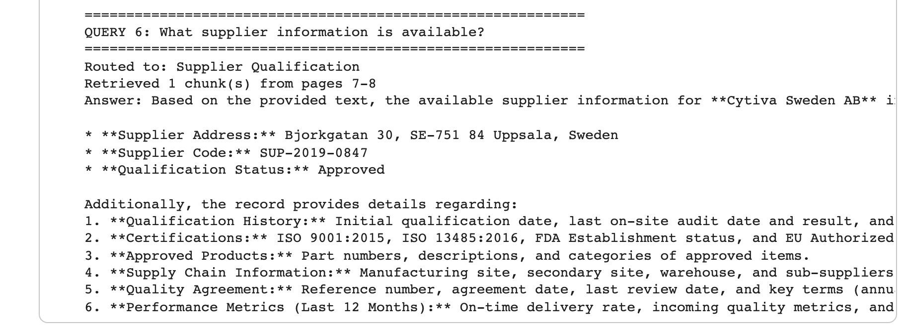
(opens the picture full size in a new tab)Question 6 went to the Supplier Qualification, and its one chunk came back: pages 7 to 8.
When your output shows all 6 questions like ours, you're done. Your answers' words may differ a little, because Gemini writes them fresh each time.